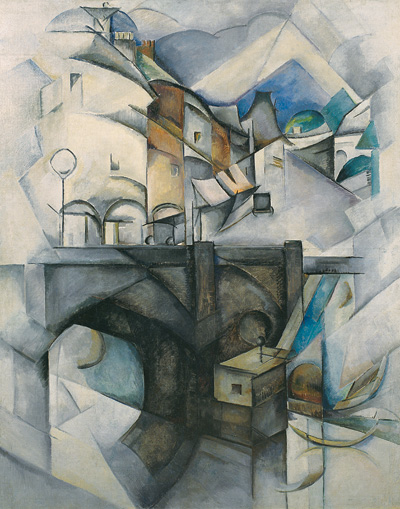
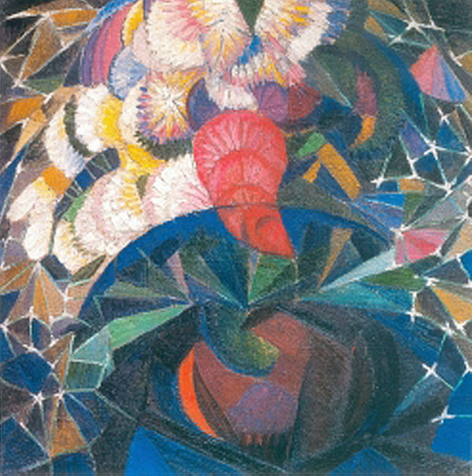
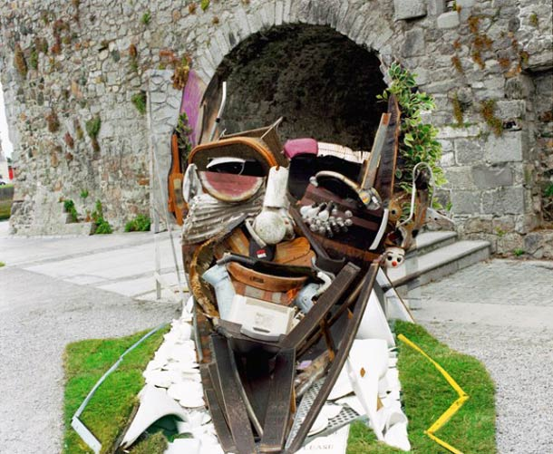
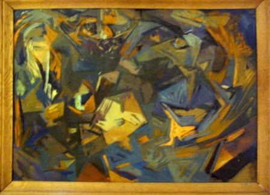
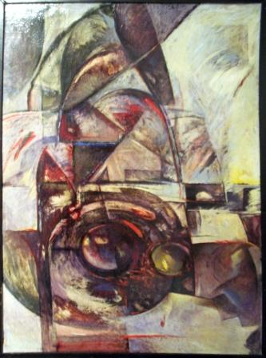
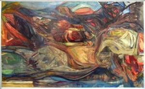

Авангардизм
Мистецтво авангардизму є формою заперечення, протесту, бунтарства, стихійної революційності, руйнування банальної офіційної культури. Авангардисти пародіюють усталені мистецькі цінності, традиційні художні засоби, руйнують межі між мистецтвом для еліти і масовою культурою.
Мистецтво авангарду зруйнувало традиційні засади художньої творчості.
Якщо стиль модерн був викликаний неприйняттям індустріалізації та урбанізації, то авангард пов'язаний з цими процесами органічно — він є прямим породженням нових ритмів життя, прискорених темпів змін, величезних, емоційних та психологічних перевантажень — і загалом світу, в якому панують катаклізми, а людина втрачає узвичаєну точку опори.
Авангардизм у живопису — це різні напрями, які виступали щоразу з позицій відкриття нових ідей. Однак у всіх авангардних течій є спільне, що дає підстави єднати їх в одну художню епоху.
По-перше, це принципова установка на новаторство, яке не просто заперечує попередні стилі, а повністю їх ігнорує.
По-друге, художники-авангардисти свідомо відмовляються від буквалізму — від зображення предметного світу таким, яким його бачить око художника. І кожна нова авангардна течія відкриває свій спосіб проникнення у сутність речей та явищ. Тому важливою рисою авангарду є його аналітичність.
Авангардне мистецтво — і це теж його особливість — несе в собі специфіку світовідчуття людини XX століття.
 Художники увібрали в себе шалений темперамент своєї доби, відчуття історичного зсуву, всесвітності змін, які відбуваються, зрушення всіх традиційних координат життя.
Художники увібрали в себе шалений темперамент своєї доби, відчуття історичного зсуву, всесвітності змін, які відбуваються, зрушення всіх традиційних координат життя.
Невипадково одним з найпоширеніших сюжетів авангардного живопису 10—20-х років стала композиція, де зсунуті з місця всі форми, де розколоті слова, де площини наче плавають чи насуваються одна на одну у неспокійному, вібруючому середовищі.
Ці картини відбивають всю збентеженість, все сум'яття і невпорядкованість свого часу. І вони ж виявляють пристрасні пошуки нової точки опори для людини у розбурханому й нестабільному світі.
Осередками авангардних пошуків ставали не лише молоді акторські групи або журнали, а й мистецькі виставки, яких на той час було чимало й які набували іноді епатуючого характеру: одеські "Салони" скульптора В. Іздебського, київське "Звено", харківська "Голубая лилия" студії Є. Агафонова, приголомшуючі "Будяк" та "Выкусь". Вони сприяли активній європеїзації українського малярства й пластики, формуванню нової художньої свідомості.
Україна мала ряд пріоритетів у розбудові образотворчого авангарду. Тут з'явився перший абстрактний твір-малюнок В. Кандинського на обкладинці каталогу "Салон Іздебського 2". Перша широка міжнародна авангардна виставка в тодішній імперії відбулася в Одесі й Києві, а вже потім у Петербурзі й Ризі.
Ще в 10-ті роки XX ст. — у спокійній атмосфері інтелектуально вируючої Європи — українські художники мали змогу знайомитися з європейськими школами і течіями. Найбільше притягувала атмосфера французької столиці з її музеями, виставками, майстернями, а також Краків, Мюнхен, де також існували мистецькі осередки.
Молоді майстри, що відчули за кордоном смак вільного вибору засобів естетичного вираження, стали в Україні першим загоном авангарду, підтриманим більшістю студентства Києва і Харкова.
Творча молодь гуртувалася навколо художника (пізніше професора Київського художнього інституту) Олександра Богомазова і його соратниці Олександри Екстер.
|  |  |
Український живописний авангард, як кожний великий стиль, має наднаціональний характер. Однак такі його риси, як колористичне багатство (чого ми не знайдемо ні у французькому кубізмі, ні в німецькому експресіонізмі, де колір використовували здебільшого для підкреслення фактури, матеріальності предмета, стану людини), як присутність у фарбах, у формах елементів середньовічної ікони (чергування кутів та овалів, які мали священне символічне значення), а також колориту київських мозаїк (з їх шляхетними рубіновими, смарагдовими, золотистими гамами, що перериваються темними згустками фарб) і, нарешті, декоративність (запозичена з українського селянського побуту, взята від хати-мазанки) — вся вітальна сила селянського мистецтва надають йому певної національної специфіки.
Сьогодні ж наші авангардисти широко використовується треш-арт (з англ. "мистецтво сміття" ), який порушує загальноприйняті уявлення про хороший смак та соціальні норми. Його привабливість заключається у брутальній енергетиці та непередбачуваності. Треш-арт висловлює свій протест проти шаблонів, рамок і правил і виступає альтернативним мистецтвом. Але навіщо суспільству таке сучасне мистецтво?
Олександр Ройтбурд, якого називають "авангардним дідусем", "ветераном сучасного мистецтва", "патріархом українського постмодернізму", вважає, що у сучасному суспільстві мистецтво виконує свою природну функцію. Тобто, якщо людина має такі життєво-необхідні функції як, їсти, спати, працювати, то суспільство теж створює певні матеріальні цінності, створює мистецтво, як певну функцію самовираження.
|  |  |  |
Український мистецький авангард творив справді високе мистецтво. В цей період істинно ренесансного злету Україна показала, яке багатство талантів і обдарувань має наш народ. Митці й науковці натхненно, наполегливо працювали у різних умовах — і колоніального існування в останні імперські роки, і в суворі, жорстокі часи війни й революції, і в перші — ще сприятливі для розбудови національної культури — пореволюційні роки; творили надзвичайно інтенсивно і плідно (наче передчуваючи нетривалість цих умов) науку і мистецтво найвищого рівня. Тому таким вагомим став вітчизняний доробок і такий значний його внесок у світову культуру.
Вгору